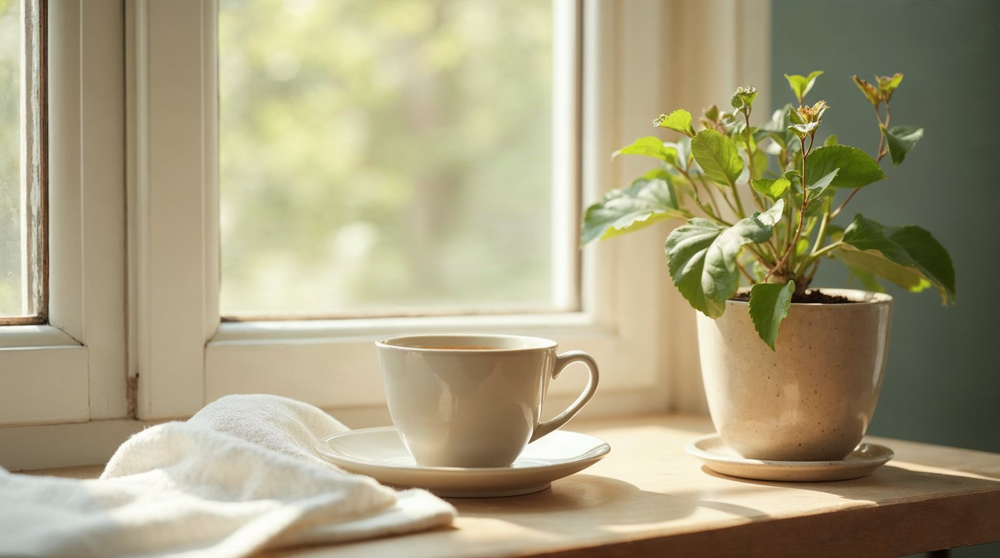
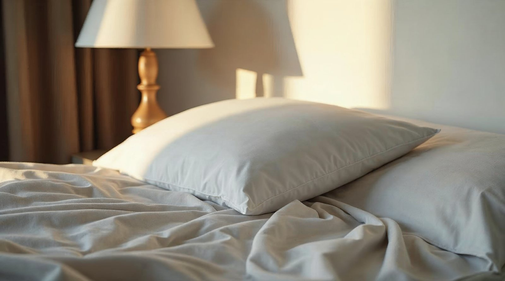
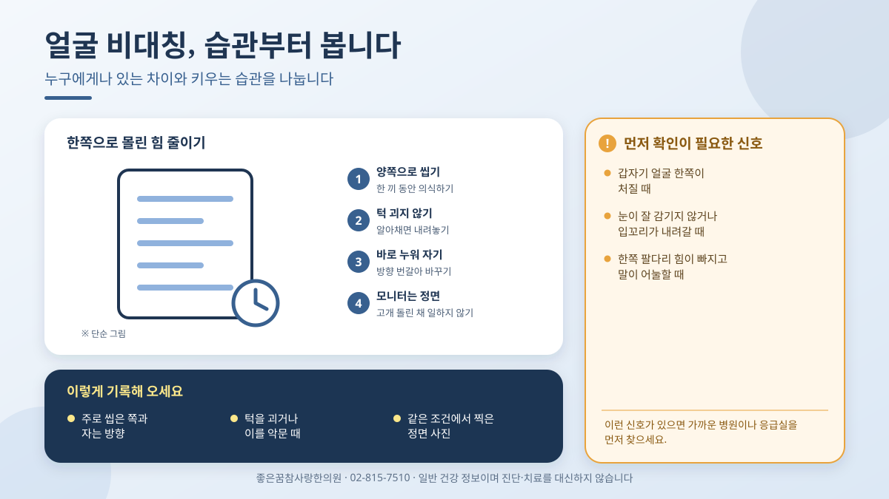

이종호 한의사 감수좋은꿈참사랑한의원 대표원장 (한의사 면허번호 19769)발행 2026-11-26 · 수정 2026-11-26
이 글의 차례
휴대폰으로 찍은 단체 사진을 넘겨 보다가 손이 멈춥니다. 내 얼굴만 한쪽으로 살짝 기울어 보이고, 한쪽 턱선이 더 각져 보입니다. 거울 앞에서 이리저리 고개를 돌려 보다가, 한쪽 눈이 더 작은 것 같고 입꼬리 높이도 다른 것 같아 마음이 무거워집니다.
진료실에서 얼굴 비대칭 이야기를 꺼내시는 분들은 대개 조심스럽습니다. 외모 이야기라 말하기가 쑥스럽기도 하고, 이런 것도 한의원에서 물어봐도 되는지 망설여지신다고 합니다. 저는 그 마음이 충분히 이해되고, 편하게 꺼내셔도 된다고 말씀드립니다.
먼저 알아 두셨으면 하는 것이 있습니다. 사람의 얼굴은 원래 완벽한 좌우 대칭이 아닙니다. 대부분의 사람이 눈 크기, 눈썹 높이, 광대와 턱선의 모양에서 조금씩 차이를 갖고 있습니다. 우리가 흔히 거울로 보는 얼굴과 사진 속 얼굴이 좌우가 바뀌어 있어서 더 낯설게 느껴지기도 합니다.
이 글에서는 자연스러운 차이와 생활 습관이 키우는 차이, 병원 진료가 먼저 필요한 변화를 어떻게 나눠 보는지, 일상에서 무엇을 살펴볼 수 있는지를 차례로 풀어 보겠습니다.
얼굴은 원래 어느 정도 비대칭인가요?
얼굴의 좌우가 조금씩 다른 것은 아주 흔한 일입니다. 뼈가 자라는 속도, 치아가 나는 순서, 어릴 때부터의 씹는 습관과 자는 자세까지 여러 가지가 겹쳐 얼굴은 저마다 조금씩 다른 모양으로 자랍니다. 다른 사람은 잘 알아채지 못할 정도의 차이를 나만 크게 느끼는 경우도 많습니다.
사진은 비대칭을 더 크게 보이게 하기도 합니다. 휴대폰 카메라는 가까이서 찍으면 렌즈에 가까운 쪽이 더 크게 나오고, 찍는 각도와 조명에 따라 한쪽 얼굴이 더 그늘져 보입니다. 거울 속 얼굴과 좌우가 바뀐 모습이라 익숙하지 않은 느낌도 더해집니다.
그래서 진료실에서는 사진 한 장보다 정면에서 같은 조건으로 본 모습, 그리고 그 차이가 최근에 달라졌는지를 더 중요하게 봅니다. 오래전부터 그대로인 차이와 최근에 새로 생기거나 커진 차이는 살피는 방향이 다릅니다.
왜 얼굴의 비대칭이 더 커 보이게 될까요
생활 습관이 만드는 차이가 있습니다. 한쪽으로만 음식을 씹으면 그쪽 씹는 근육이 더 발달해 턱선이 더 각져 보이고, 반대쪽은 상대적으로 갸름해 보일 수 있습니다. 질기거나 딱딱한 음식을 즐기는 분, 껌을 자주 씹는 분에게서 더 두드러지기도 합니다.
턱을 괴는 습관, 한쪽으로만 엎드리거나 옆으로 누워 자는 습관도 얼굴에 꾸준히 한쪽 방향의 힘을 줍니다. 짧은 시간이라면 문제가 되지 않지만, 매일 몇 시간씩 같은 방향으로 이어지면 근육의 긴장과 얼굴의 인상에 영향을 줄 수 있습니다.
자세도 얼굴로 이어집니다. 고개를 한쪽으로 기울이고 일하거나, 모니터가 한쪽에 있어 고개를 늘 돌린 채 지내거나, 무거운 가방을 한쪽 어깨로만 메면 목과 어깨의 높이가 달라집니다. 머리가 기울면 얼굴도 기울어 보이고, 한쪽 턱 근육과 목 근육이 더 긴장합니다.
이를 악무는 습관과 이갈이도 있습니다. 긴장하면 이를 꽉 무는 분, 잠자리에서 이를 가는 분은 씹는 근육이 하루 종일 쉬지 못해 두꺼워지기 쉽고, 한쪽으로 더 세게 무는 습관이 있다면 좌우 차이가 커 보일 수 있습니다.
치아와 턱뼈의 맞물림에서 오는 차이도 있습니다. 위아래 치아가 한쪽으로 어긋나 맞물리거나, 턱뼈 자체가 한쪽으로 더 자란 경우에는 근육이나 습관보다 뼈와 치아의 구조가 주된 이유입니다. 이런 경우는 치과나 구강악안면외과에서 함께 확인하시는 것이 좋습니다.
어떤 비대칭은 병원 진료를 먼저 받아야 하나요?
오래전부터 서서히 이어진 비대칭은 대개 습관과 구조가 만든 차이입니다. 하지만 아래처럼 최근에 새로 생기거나 갑자기 달라진 경우에는 이유를 먼저 확인해야 합니다.
- 며칠 사이에 얼굴 한쪽이 처지고 눈이 잘 감기지 않는 경우
- 한쪽 얼굴이나 턱 아래가 붓고 만져지는 덩어리가 생긴 경우
- 턱이 아프고 입을 벌릴 때마다 한쪽으로 크게 휘며 소리가 나는 경우
- 다친 뒤 얼굴 모양이 달라지고 이가 맞지 않는 경우
첫 번째는 안면신경마비처럼 신경의 문제일 수 있어 신경과나 이비인후과 진료를 먼저 받아 보시길 권합니다. 두 번째는 침샘이나 림프샘의 문제일 수 있어 이비인후과나 내과 진료를 권합니다. 세 번째는 턱관절 상태를 함께 살피고, 네 번째는 치과나 병원에서 뼈와 치아를 먼저 확인합니다.
비슷해 보이지만 다른 얼굴의 불편
아침마다 한쪽 눈두덩이나 얼굴이 유난히 붓는다면 비대칭이라기보다 붓기의 차이일 수 있습니다. 자는 방향, 짠 음식, 잠의 질과 함께 살핍니다.
얼굴 한쪽 눈가와 입꼬리가 함께 씰룩이는 경우는 반측안면경련처럼 신경과 관련된 불편이라 비대칭과는 따로 살핍니다. 얼굴 한쪽이 저리거나 감각이 둔하다면 그것 역시 신경 쪽을 먼저 확인합니다.
턱에서 소리가 나고 입이 잘 벌어지지 않는 턱관절 장애가 있는 분은 턱이 한쪽으로 휘며 벌어지면서 얼굴이 비대칭으로 보이기도 합니다. 이런 경우에는 턱관절의 불편을 함께 살피는 것이 먼저입니다.
집에서 해 볼 수 있는 간단한 확인
거울 앞에서 아래처럼 살펴보세요. 사진은 같은 거리, 같은 조명, 정면에서 찍어야 비교가 됩니다.
- 거울 앞에 서서 양쪽 어깨 높이와 고개가 기우는 방향 보기
- 입을 천천히 벌리며 아래턱이 곧게 내려가는지, 한쪽으로 휘는지 보기
- 어금니를 꽉 물었을 때 양쪽 턱 근육이 불룩해지는 정도 비교하기
- 식사할 때 주로 어느 쪽으로 씹는지 한 끼 동안 의식해 보기
- 잠들 때와 깰 때 어느 쪽으로 누워 있는지 떠올려 보기
이렇게 확인한 내용을 적어 오시면 진료에 큰 도움이 됩니다. 특히 씹는 쪽과 자는 방향, 턱을 괴는 손이 같은 쪽으로 몰려 있는지 보시면 습관의 흐름이 보이기 시작합니다.
나이와 생활에 따라 달라지는 얼굴의 균형
10대에는 얼굴뼈가 한창 자라는 시기라, 이때의 습관과 치아의 맞물림이 얼굴의 균형에 영향을 줄 수 있습니다. 비대칭이 눈에 띄게 커진다면 치과에서 성장과 맞물림을 함께 확인받으시는 것이 좋습니다.
20대와 30대에는 일과 공부로 고개를 한쪽으로 돌린 채 지내는 시간이 길고, 긴장으로 이를 악무는 습관이 생기기 쉽습니다. 이 시기의 비대칭 고민은 자세와 씹는 습관, 이 악물기를 함께 살피는 경우가 많습니다.
나이가 드시면서 치아가 빠지거나 한쪽 치아가 불편해 한쪽으로만 씹게 되면 얼굴의 균형이 달라질 수 있습니다. 치과에서 맞물림을 함께 챙기시면 씹는 근육의 좌우 균형을 지키는 데 도움이 됩니다.

외모 고민이 마음까지 무겁게 할 때
얼굴 비대칭 고민은 몸의 문제이면서 마음의 문제이기도 합니다. 사진을 찍을 때마다 한쪽 얼굴만 보이도록 고개를 돌리게 되고, 사람들과 마주 앉는 자리가 불편해지기도 합니다. 그렇게 신경을 쓰다 보면 목과 어깨에 힘이 들어가 몸까지 굳는 경우가 많습니다.
이런 마음이 오래 이어져 잠이 얕아지거나, 거울을 보는 시간이 하루 중 많아지거나, 외출이 꺼려진다면 그 마음도 함께 이야기해 주세요. 얼굴의 차이를 살피는 것만큼, 그 고민이 일상을 얼마나 무겁게 하고 있는지 아는 것도 중요합니다.
진료실에서는 비대칭의 정도를 판단하기보다 지금 불편한 것이 무엇인지부터 함께 정리합니다. 턱이 뻐근한 것인지, 목이 기우는 것인지, 사진 속 모습이 마음에 걸리는 것인지에 따라 살피는 방향이 달라집니다.
먼저 이렇게 여쭙니다
얼굴 비대칭으로 오시면 저는 대략 이런 순서로 여쭙니다. 떠오르는 대로 편하게 말씀해 주세요.
- 언제부터 비대칭이 신경 쓰였고, 최근에 달라진 점이 있나요?
- 가장 마음에 걸리는 부분은 눈, 턱선, 입꼬리 가운데 어디인가요?
- 주로 어느 쪽으로 씹고, 어느 쪽으로 누워 자나요?
- 턱을 괴거나 이를 악무는 습관이 있나요?
- 턱에서 소리가 나거나 아픈 적이 있나요?
- 치아 교정이나 발치, 큰 치과 치료를 받은 적이 있나요?
어릴 때 사진과 최근 사진을 함께 가져와 주시면, 차이가 오래전부터 있었는지 최근에 커졌는지를 함께 살펴보는 데 도움이 됩니다.
일상에서 먼저 해 볼 수 있는 것
생활 습관이 만드는 차이는 습관을 바꾸는 데서 시작합니다. 한꺼번에 모두 바꾸기보다 하나씩 골라 보세요.
- 식사할 때 양쪽으로 번갈아 씹기를 의식해 보기
- 질긴 음식과 껌을 오래 씹는 습관 줄이기
- 턱을 괴는 손을 알아채면 바로 내려놓기
- 잠잘 때 바로 누워 자는 시간을 조금씩 늘려 보기
- 모니터를 정면에 두고 고개를 돌린 채 일하지 않기
- 가방은 양쪽 어깨로 번갈아 메거나 백팩 쓰기
이를 악무는 습관이 있다면 혀의 자리를 확인해 보세요. 입을 다물고 있을 때 혀끝을 윗니 바로 뒤 입천장에 가볍게 대고, 윗니와 아랫니는 살짝 떨어뜨려 둡니다. 이 자세가 턱 근육이 쉬는 자리입니다. 휴대폰 화면이나 모니터 한쪽에 작은 표시를 붙여 두고, 볼 때마다 확인하는 방법도 도움이 됩니다.
목과 어깨를 자주 풀어 주는 것도 좋습니다. 한 시간에 한 번 고개를 천천히 좌우로 기울이고 돌려 보며, 한쪽이 더 뻑뻑하다면 그쪽을 조금 더 부드럽게 늘려 주세요. 어깨를 귀 쪽으로 올렸다가 툭 내려놓는 동작도 함께 해 보세요.
습관을 바꾼다고 얼굴 모양이 금세 달라지는 것은 아닙니다. 다만 한쪽으로 몰리던 힘을 줄이면 근육의 긴장이 고르게 나누어지고, 턱과 목이 한결 편안해지는 것을 느끼시는 분이 많습니다.
한의원에서 함께 살필 수 있는 경우
- 한쪽 턱 근육이 늘 뻐근하고 이를 악무는 습관이 있는 경우
- 목과 어깨의 높이가 달라 머리가 한쪽으로 기울어 보이는 경우
- 턱에서 소리가 나고 턱 주변과 관자놀이가 자주 아픈 경우
- 한쪽으로만 자거나 턱을 괴는 습관으로 한쪽 얼굴과 목이 굳은 경우
- 얼굴 비대칭 고민과 함께 목, 어깨, 두통이 자주 겹치는 경우
좋은꿈참사랑한의원에서는 진찰한 내용을 바탕으로 생활에서 바꿔 볼 것과 함께 침 치료, 추나요법 가운데 지금 상태에 맞는 것을 정합니다. 추나는 목과 어깨, 턱 주변의 움직임과 긴장을 먼저 살핀 뒤 몸에 맞는 기법과 세기를 고르고, 강한 교정이 부담스러운 분께는 부드러운 두개천골추나를 고려하기도 합니다.
뼈의 구조나 치아의 맞물림이 주된 이유로 보이면 치과나 구강악안면외과 진료를 함께 받아 보시길 권합니다. 한의원 진료가 얼굴의 생김새를 바꾸는 것은 아니며, 근육의 긴장과 자세, 생활 습관을 함께 살피는 쪽으로 돕습니다.

이렇게 기록해 오시면 상담이 쉬워집니다
얼굴의 균형은 하루아침에 판단하기 어렵습니다. 2주 정도 아래를 간단히 적어 보세요.
- 한 끼 식사 동안 주로 씹은 쪽
- 잠들 때와 깰 때 누워 있던 방향
- 턱을 괴거나 이를 악물고 있던 것을 알아챈 때
- 턱이나 관자놀이, 목이 뻐근했던 날
- 한 달에 한 번, 같은 거리와 조명에서 찍은 정면 사진
기록을 모아 보면 한쪽으로 몰린 습관이 생각보다 많다는 것을 알게 되는 분이 많습니다. 그 습관 하나를 바꾸는 것이 출발점이 됩니다.
내 얼굴을 너무 엄하게 보지 않기를
얼굴 비대칭이 신경 쓰이기 시작하면 거울을 볼 때마다 차이만 눈에 들어옵니다. 그럴수록 사진을 여러 장 찍고 비교하며 마음이 더 무거워지기도 합니다. 누구에게나 있는 자연스러운 차이라는 것을 먼저 떠올려 주세요.
이번 주에는 식사할 때 양쪽으로 번갈아 씹는 습관 하나만 시작해 보세요. 다음에 오실 때 습관 기록과 신경 쓰이는 부분을 편하게 들려주시면, 거기서부터 함께 살펴보겠습니다.
이런 증상은 먼저 확인이 필요합니다
- 갑자기 얼굴 한쪽이 처지고 눈이 잘 감기지 않거나 입꼬리가 내려가는 경우
- 얼굴이 한쪽으로 처지면서 한쪽 팔다리에 힘이 빠지거나 말이 어눌해지는 경우
이런 신호가 있으면 한의원보다 가까운 병원이나 응급실을 먼저 찾으세요.
함께 읽으면 좋은 글
- 턱에서 소리가 나고 입이 잘 안 벌어지는 턱관절 장애는 어떻게 살피나요?
- 자면서 이를 갈거나 낮에도 이를 꽉 무는 이갈이·이 악물기는 어떻게 살피나요?
- 무거운 가방을 한쪽 어깨로만 메고 다니면 어깨 높이가 달라 보일 때는?
- 얼굴 한쪽 눈가와 입꼬리가 함께 씰룩이는 반측안면경련은 어떻게 살피나요?
- 아침마다 눈두덩과 얼굴이 퉁퉁 붓는 얼굴 부종은 무엇을 나눠 살피나요?

여쭙는 것
- 언제부터 비대칭이 신경 쓰였고, 최근에 달라진 점이 있나요?
- 가장 마음에 걸리는 부분은 눈, 턱선, 입꼬리 가운데 어디인가요?
- 주로 어느 쪽으로 씹고, 어느 쪽으로 누워 자나요?
생활에서 해 볼 것
- 식사할 때 양쪽으로 번갈아 씹기를 의식해 보기
- 질긴 음식과 껌을 오래 씹는 습관 줄이기
- 턱을 괴는 손을 알아채면 바로 내려놓기
한의원에서 함께 살필 것
- 한쪽 턱 근육이 늘 뻐근하고 이를 악무는 습관이 있는 경우
- 목과 어깨의 높이가 달라 머리가 한쪽으로 기울어 보이는 경우
- 턱에서 소리가 나고 턱 주변과 관자놀이가 자주 아픈 경우
먼저 확인이 필요한 신호
- 갑자기 얼굴 한쪽이 처지고 눈이 잘 감기지 않거나 입꼬리가 내려가는 경우
- 얼굴이 한쪽으로 처지면서 한쪽 팔다리에 힘이 빠지거나 말이 어눌해지는 경우
한눈에 보는 표
| 구분 | 핵심 |
|---|---|
| 여쭙는 것 | 언제부터 비대칭이 신경 쓰였고, 최근에 달라진 점이 있나요? 가장 마음에 걸리는 부분은 눈, 턱선, 입꼬리 가운데 어디인가요? |
| 생활에서 해 볼 것 | 식사할 때 양쪽으로 번갈아 씹기를 의식해 보기 질긴 음식과 껌을 오래 씹는 습관 줄이기 |
| 한의원에서 함께 살필 것 | 한쪽 턱 근육이 늘 뻐근하고 이를 악무는 습관이 있는 경우 목과 어깨의 높이가 달라 머리가 한쪽으로 기울어 보이는 경우 |
| 먼저 확인이 필요한 신호 | 갑자기 얼굴 한쪽이 처지고 눈이 잘 감기지 않거나 입꼬리가 내려가는 경우 얼굴이 한쪽으로 처지면서 한쪽 팔다리에 힘이 빠지거나 말이 어눌해지는 경우 |
자주 묻는 질문
추나를 받으면 얼굴 비대칭이 달라지나요?
한의원 진료가 얼굴의 생김새를 바꾸는 것은 아닙니다. 목과 어깨, 턱 주변 근육의 긴장과 자세를 함께 살피고, 한쪽으로 몰린 습관을 바꾸는 쪽으로 돕습니다.
한쪽으로만 씹는 습관이 얼굴에 영향을 주나요?
오랫동안 한쪽으로만 씹으면 그쪽 씹는 근육이 더 발달해 턱선이 달라 보일 수 있습니다. 양쪽으로 번갈아 씹는 습관을 의식해 보세요.
치과에 먼저 가야 하나요, 한의원에 먼저 가야 하나요?
치아의 맞물림이 어긋났거나 턱뼈 구조가 걱정된다면 치과나 구강악안면외과에서 먼저 확인받으시길 권합니다. 근육의 긴장과 자세는 한의원에서 함께 살필 수 있습니다.
사진에서만 비대칭이 심해 보이는데 괜찮을까요?
휴대폰 카메라는 가까이서 찍으면 한쪽이 더 크게 나오고 좌우도 바뀌어 보여 차이가 커 보이기 쉽습니다. 같은 거리와 조명에서 정면으로 찍어 비교해 보세요.
옆으로 누워 자는 습관을 바꾸기 어려워요.
한 번에 바꾸기보다 잠들 때만이라도 바로 누워 보시고, 옆으로 눕더라도 방향을 번갈아 바꿔 보세요. 베개 높이를 맞추면 바로 눕기가 한결 편해집니다.
좋은꿈참사랑한의원은 재진 때 지난번 이야기부터 이어서 여쭙니다. 진료시간과 예약은 오시는 길에서 확인하세요.
어디서 상담받을 수 있나요?
좋은꿈참사랑한의원은 서울 동작구 만양로2길 2 신성빌딩 3층·5층(서울 동작구 상도동, 7호선 상도역 3번 출구 근처)에 있습니다. 한의사 3명(이종호 대표원장, 조영기 수석진료원장, 정원영 진료원장)이 진료합니다. 진료시간은 평일 09:30~20:00(점심 13:00~14:00), 토·일·공휴일 09:30~15:00이며, 방문 전 전화로 확인을 권합니다. 예약은 네이버 예약, 카카오톡 상담, 전화 02-815-7510로 받습니다.
이 글은 일반적인 건강 정보이며 개인의 진단이나 치료를 대신하지 않습니다. 증상이 있거나 복용 중인 약이 있다면 진료를 통해 확인하세요. 치료 효과는 개인마다 다를 수 있습니다.
작성 기준: 일반적으로 알려져 있는 건강 정보를 참고해 정리했습니다(대표원장 감수). 증상 기록은 1~2주 동안 하루 1회, 비슷한 시간에 적어 오시면 지난 상태와 비교하기 쉽습니다.